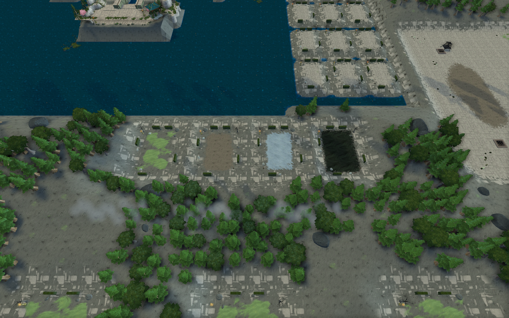

<!doctype html><html lang="zh-CN"><meta charset="utf-8"><meta name="viewport" content="width=device-width,initial-scale=1"><title>苟发育 · 地形衔接修订</title>
<style>body{margin:0;background:#101713;color:#e5ece6;font:16px/1.7 system-ui,sans-serif}main{max-width:1320px;margin:auto;padding:36px 24px}h1{margin:0;font-size:30px}p,figcaption{color:#b8c7bc}nav{display:flex;gap:12px;flex-wrap:wrap;margin:24px 0}a{color:#c6d9bc}nav a{padding:6px 14px;border:1px solid #3b5042;border-radius:6px;text-decoration:none}figure{margin:0 0 35px}img{width:100%;display:block;border-radius:8px}figcaption{padding:10px 0}.compare{display:grid;grid-template-columns:1fr 1fr;gap:16px}@media(max-width:800px){.compare{grid-template-columns:1fr}}</style>
<main><h1>苟发育 · 地形衔接修订</h1><p>游戏实拍 · 连续地面与纹理过渡 · 山脊树林 · 四向主岛</p><nav><a href="#camp_transition">营地边缘</a><a href="#grass_paving">草地与石板</a><a href="#mountain_canopy">山体树林</a><a href="#comparison">练功房前后对比</a><a href="#overview">全图</a></nav><div id="gallery"></div><div id="comparison"><h2>练功房前后对比</h2><div class="compare"><figure><figcaption>修改前</figcaption></figure><figure><figcaption>本次修改后</figcaption></figure></div></div><p>地图：survival_world_v2。点击图片可查看原尺寸。</p></main>
<script>const shots=[['camp_transition','营地：泥地与铺装过渡'],['grass_paving','草地与硬质地面边界'],['mountain_canopy','不可通行山体与树林'],['lower_training','下方练功房'],['upper_training','顶部练功房'],['volcanic_arena','火山挑战区'],['snow_camps','雪地营地'],['boss_islands','挑战房间'],['central_island','保留四向原岛与十字浅水'],['shallow_lake','可通行的十字浅水'],['tree_close','原岛环境'],['overview','全图布局']];for(const[id,title]of shots){const f=document.createElement('figure');f.id=id;const a=document.createElement('a');a.href=id+'.png';a.target='_blank';const im=document.createElement('img');im.src=id+'.png?v='+Date.now();im.alt=title;im.loading='lazy';a.append(im);const c=document.createElement('figcaption');c.textContent=title;f.append(a,c);document.querySelector('#gallery').append(f)}</script></html>
